First SNP Analaysis
First Last
2016-11-17
Last updated: 2016-11-17
Code version: 1e1d7d99793f36dfee69e6b9ffead90cb4797302
This is a template for writing reports with R Markdown.
Read in SNPs and look at data
library(updog)
set.seed(3452)
load("../data/subset_David.Rdata")
dat <- subset_david
lastp <- 12 ## number of final rows that are parents
for(index in 1:length(dat)) {
cmat <- dat[[index]]
p1dat <- cmat[(nrow(cmat) - lastp + 1):(nrow(cmat) - lastp / 2), ]
p2dat <- cmat[(nrow(cmat) - lastp / 2 + 1):nrow(cmat), ]
odat <- cmat[1:(nrow(cmat) - lastp), ]
plot_geno(ocounts = odat[, 1], osize = odat[, 2] + odat[, 1], ploidy = 6,
p1counts = p1dat[, 1], p1size = p1dat[, 1] + p1dat[, 2],
p2counts = p2dat[, 1], p2size = p2dat[, 1] + p2dat[, 2])
}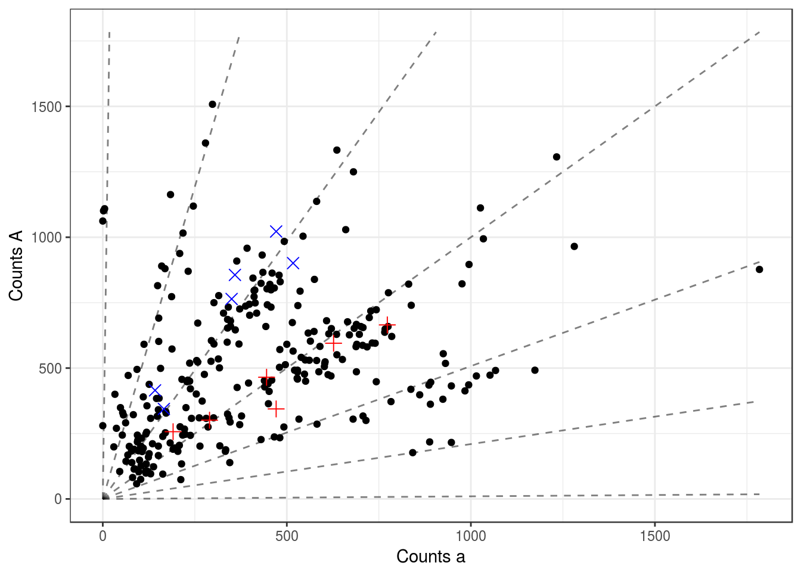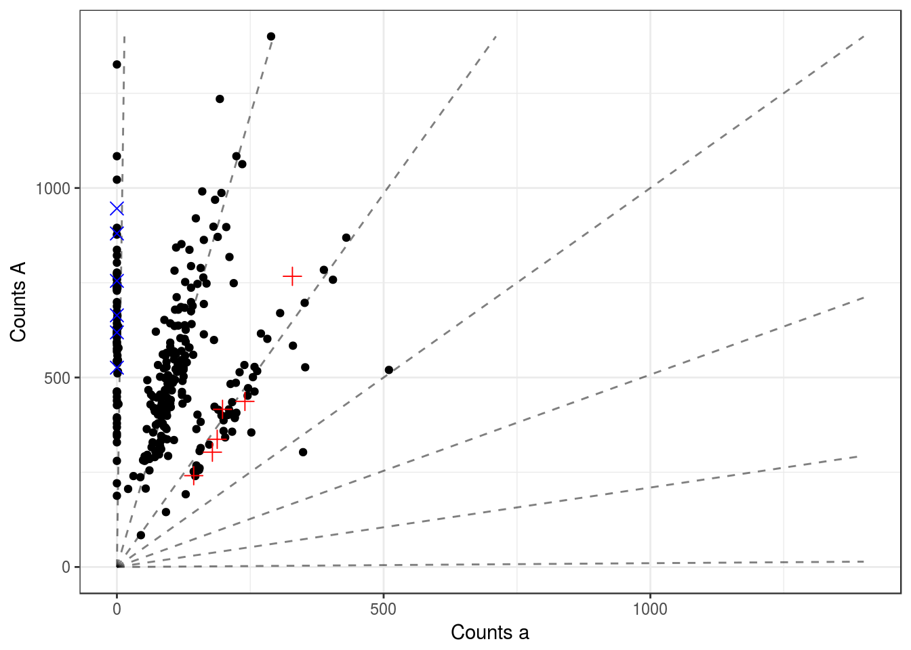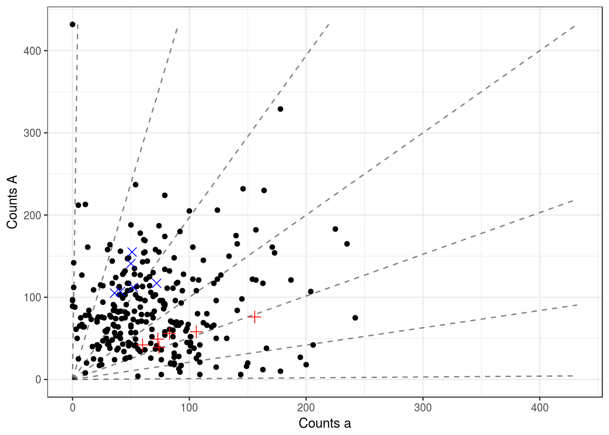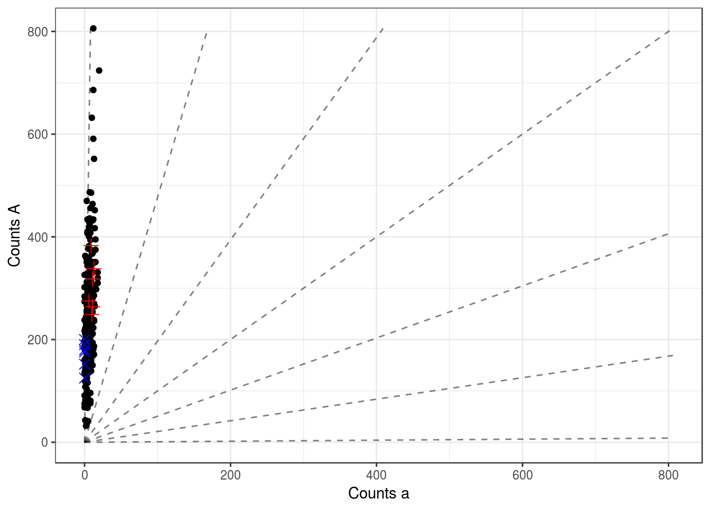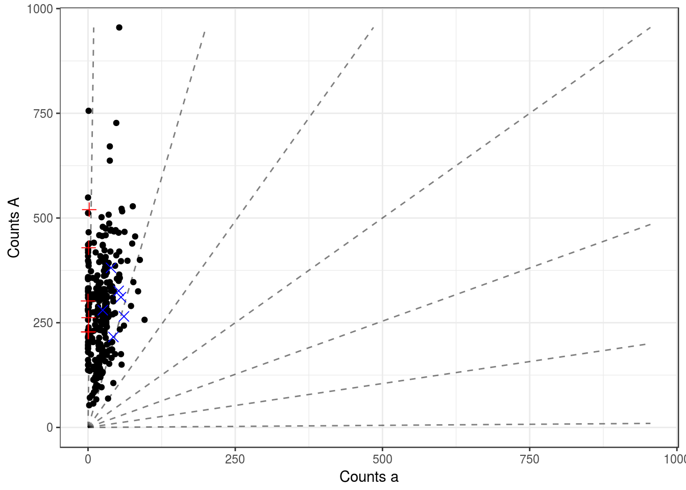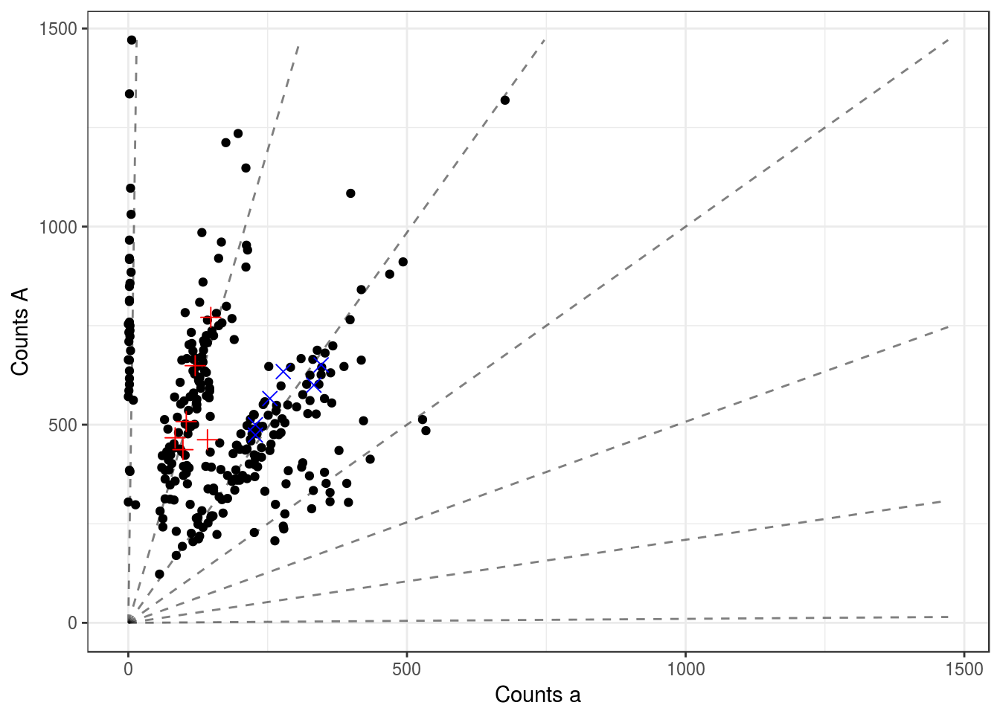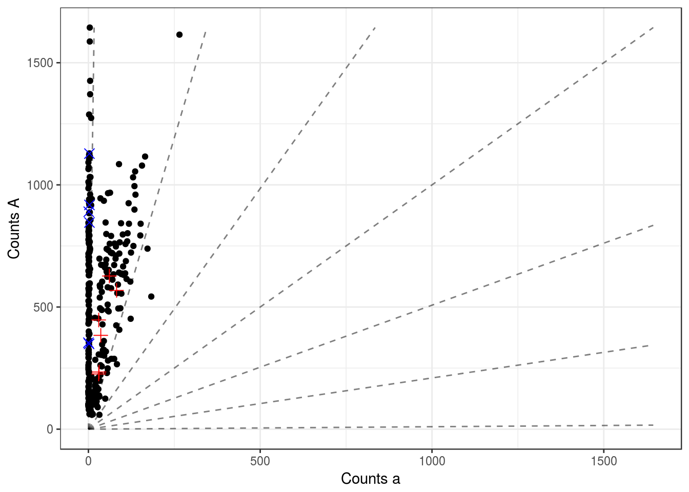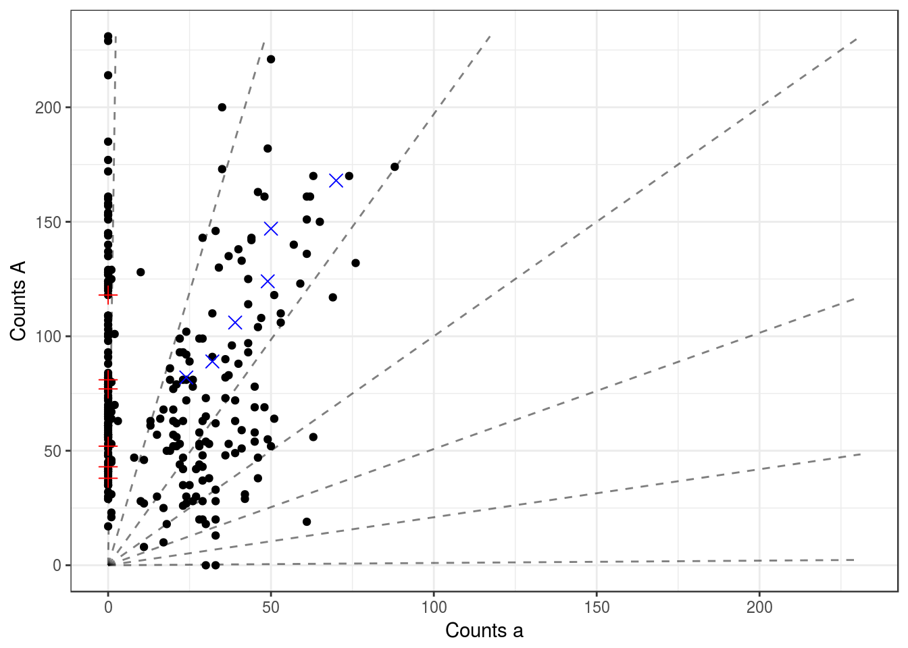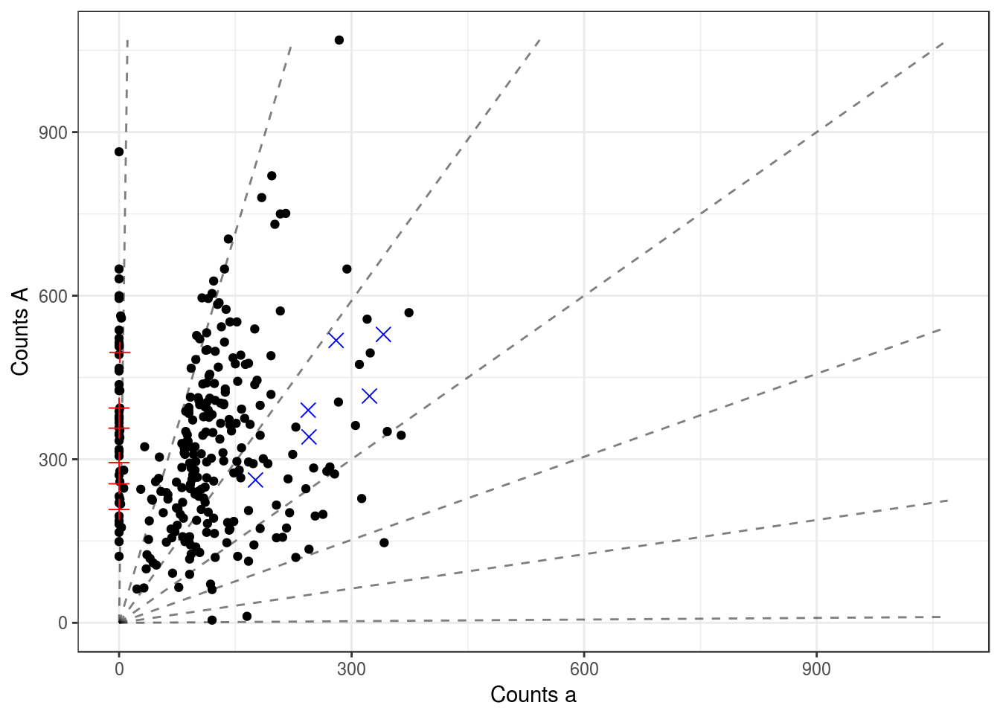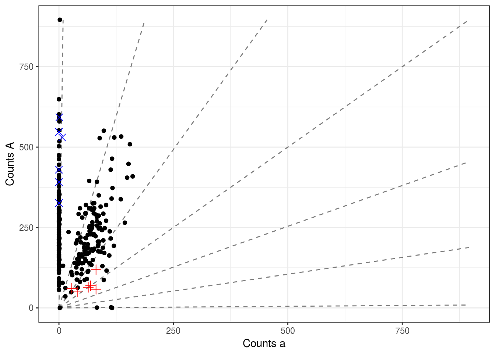
In the last three datasets, there appear to be three two observations that do not align with the rest of the data. This is curious, but they are not the same observation.
cmat <- dat[[8]]
sort(cmat[, 1] / (cmat[, 1] + cmat[, 2]))[1:4]X105269_125.MERGE X113642_182.MERGE X113642_2.MERGE X113642_134.MERGE
0.0000 0.0000 0.2375 0.2826 cmat <- dat[[9]]
sort(cmat[, 1] / (cmat[, 1] + cmat[, 2]))[1:4]X105269_117.MERGE X113642_158.MERGE X105269_172.MERGE X105269_128.MERGE
0.0400 0.0678 0.3006 0.3370 cmat <- dat[[10]]
sort(cmat[, 1] / (cmat[, 1] + cmat[, 2]))[1:4]X113642_197.MERGE X113642_22.MERGE X113642_196.MERGE X113642_77.MERGE
0.00000 0.00000 0.01190 0.01724 Run updog
We now run updog both with and without parental genotypes.
cmat <- dat[[10]]
p1dat <- cmat[(nrow(cmat) - lastp + 1):(nrow(cmat) - lastp / 2), ]
p2dat <- cmat[(nrow(cmat) - lastp / 2 + 1):nrow(cmat), ]
odat <- cmat[1:(nrow(cmat) - lastp), ]
uout <- updog(ocounts = odat[, 1], osize = rowSums(odat), ploidy = 6,
p1counts = p1dat[, 1], p1size = rowSums(p1dat),
p2counts = p2dat[, 1], p2size = rowSums(p2dat))
uout2 <- updog(ocounts = odat[, 1], osize = rowSums(odat), ploidy = 6,
p1counts = p1dat[, 1], p1size = rowSums(p1dat),
p2counts = p2dat[, 1], p2size = rowSums(p2dat),
do_mcmc = TRUE)
uout3 <- updog(ocounts = odat[, 1], osize = rowSums(odat), ploidy = 6,
do_mcmc = TRUE)The parental genotypes are chosen with near certainty
aprobs <- cmat[1:(nrow(cmat) - 12), 1]/ rowSums(cmat[1:(nrow(cmat) - 12),])
corder <- order(aprobs)
uout$p1postprob[1] 2.498e-202 1.091e-72 3.617e-20 1.000e+00 2.115e-06 1.006e-42
[7] 5.541e-147uout$p2postprob[1] 0.000e+00 0.000e+00 0.000e+00 0.000e+00 0.000e+00 6.017e-194
[7] 1.000e+00uout2$m_p1postprob[1] 0 0 0 1 0 0 0uout2$m_p2postprob[1] 0 0 0 0 0 0 1aprobs[corder[1:4]]X113642_197.MERGE X113642_22.MERGE X113642_196.MERGE X113642_77.MERGE
0.00000 0.00000 0.01190 0.01724 uout$opostprob[, corder[1:4]] X113642_197.MERGE X113642_22.MERGE X113642_196.MERGE
aaaaaa 0.000e+00 0.000e+00 0.000e+00
Aaaaaa 0.000e+00 0.000e+00 0.000e+00
AAaaaa 6.157e-195 2.439e-182 7.322e-186
AAAaaa 1.276e-01 1.000e+00 1.000e+00
AAAAaa 6.173e-01 2.134e-15 7.532e-11
AAAAAa 2.500e-01 3.623e-38 4.650e-27
AAAAAA 5.102e-03 8.308e-82 1.741e-58
X113642_77.MERGE
aaaaaa 0.000e+00
Aaaaaa 0.000e+00
AAaaaa 8.175e-183
AAAaaa 1.000e+00
AAAAaa 6.367e-15
AAAAAa 3.911e-37
AAAAAA 6.729e-80uout2$m_opostprob[, corder[1:4]] [,1] [,2] [,3] [,4]
[1,] 0.000 0 0 0
[2,] 0.000 0 0 0
[3,] 0.000 0 0 0
[4,] 0.134 1 1 1
[5,] 0.624 0 0 0
[6,] 0.237 0 0 0
[7,] 0.005 0 0 0Plot output
labelvec <- apply(uout$opostprob, 2, which.max)
pl <- plot_geno(ocounts = odat[, 1], osize = rowSums(odat),
p1counts = p1dat[, 1], p1size = rowSums(p1dat),
p2counts = p2dat[, 1], p2size = rowSums(p2dat),
ploidy = 6,
col = labelvec)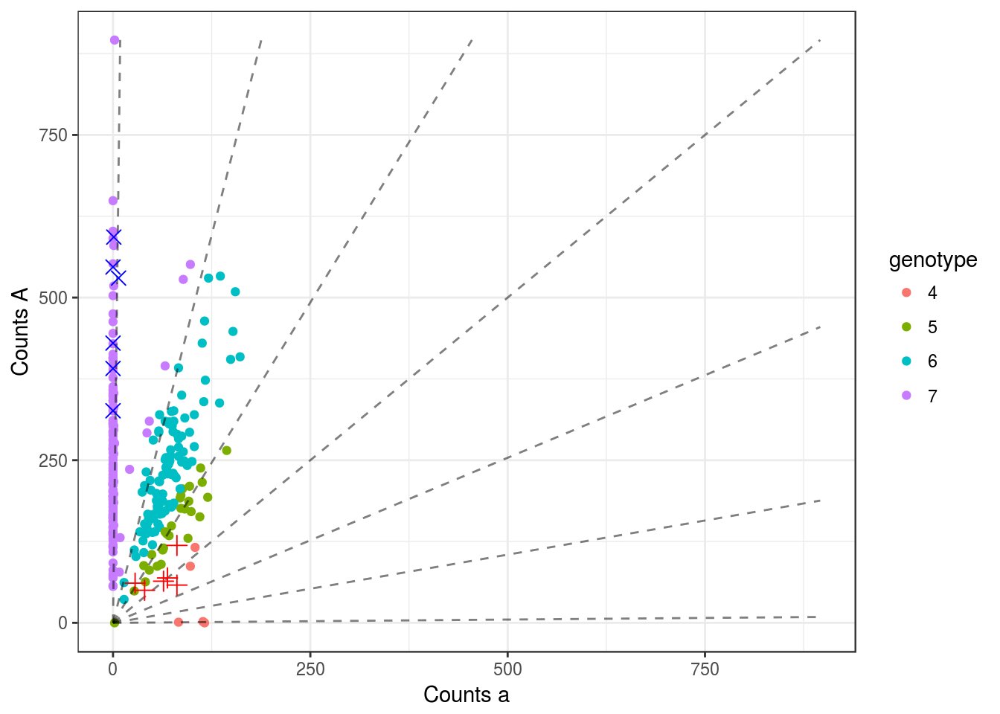
labelvec <- apply(uout2$m_opostprob, 2, which.max)
pl <- plot_geno(ocounts = odat[, 1], osize = rowSums(odat),
p1counts = p1dat[, 1], p1size = rowSums(p1dat),
p2counts = p2dat[, 1], p2size = rowSums(p2dat),
ploidy = 6,
col = labelvec)labelvec <- apply(uout3$m_opostprob, 2, which.max)
pl <- plot_geno(ocounts = odat[, 1], osize = rowSums(odat),
p1counts = p1dat[, 1], p1size = rowSums(p1dat),
p2counts = p2dat[, 1], p2size = rowSums(p2dat),
ploidy = 6,
col = labelvec)
It seems that the MCMC gives me what Felipe wants when I don’t use the parental data, this is because the few extreme offspring points draw one of the parents to have an “a” when the sequence data says that it shouldn’t:
cbind(uout3$m_p1postprob,
uout2$m_p1postprob,
round(uout$p1postprob, digits = 2)) [,1] [,2] [,3]
[1,] 0 0 0
[2,] 0 0 0
[3,] 0 0 0
[4,] 1 1 1
[5,] 0 0 0
[6,] 0 0 0
[7,] 0 0 0cbind(uout3$m_p2postprob,
uout2$m_p2postprob,
round(uout$p2postprob, digits = 2)) [,1] [,2] [,3]
[1,] 0 0 0
[2,] 0 0 0
[3,] 0 0 0
[4,] 1 0 0
[5,] 0 0 0
[6,] 0 0 0
[7,] 0 1 1I am getting very different results from the MCMC for the parental genotypes depending on the seed I use in the case when the parental genotypes are not provided. This might be because of the identifiability issue in the parents labeling, but I don’t think so because we see probabilities near 1:
set.seed(195)
getmc1 <- updog(ocounts = odat[, 1], osize = rowSums(odat), ploidy = 6,
do_mcmc = TRUE)
set.seed(196)
getmc2 <- updog(ocounts = odat[, 1], osize = rowSums(odat), ploidy = 6,
do_mcmc = TRUE)
cbind(getmc1$m_p1postprob, getmc2$m_p1postprob) [,1] [,2]
[1,] 0 0
[2,] 0 0
[3,] 0 0
[4,] 1 0
[5,] 0 0
[6,] 0 0
[7,] 0 1cbind(getmc1$m_p2postprob, getmc2$m_p2postprob) [,1] [,2]
[1,] 0 0
[2,] 0 0
[3,] 0 0
[4,] 1 1
[5,] 0 0
[6,] 0 0
[7,] 0 0plot(getmc1$m_opostprob, getmc2$m_opostprob)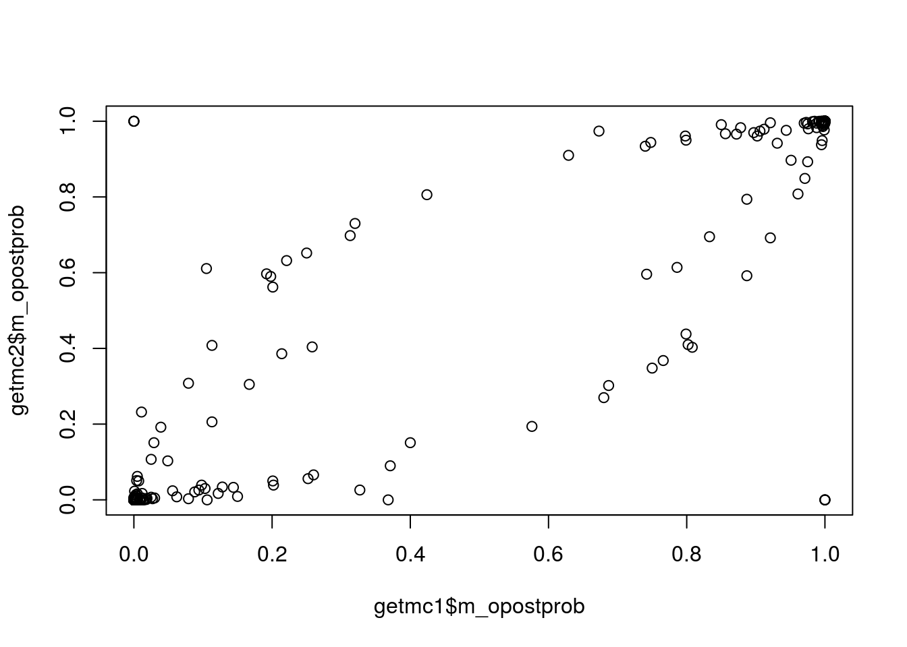
Take aways:
- There’s a bug in my MCMC and I need to fix it.
- We should probably model a fudge factor.
Session information
sessionInfo()R version 3.3.2 (2016-10-31)
Platform: x86_64-pc-linux-gnu (64-bit)
Running under: Ubuntu 14.04.5 LTS
locale:
[1] LC_CTYPE=en_US.UTF-8 LC_NUMERIC=C
[3] LC_TIME=en_US.UTF-8 LC_COLLATE=en_US.UTF-8
[5] LC_MONETARY=en_US.UTF-8 LC_MESSAGES=en_US.UTF-8
[7] LC_PAPER=en_US.UTF-8 LC_NAME=C
[9] LC_ADDRESS=C LC_TELEPHONE=C
[11] LC_MEASUREMENT=en_US.UTF-8 LC_IDENTIFICATION=C
attached base packages:
[1] stats graphics grDevices utils datasets methods base
other attached packages:
[1] updog_0.1.0 knitr_1.15
loaded via a namespace (and not attached):
[1] Rcpp_0.12.7 digest_0.6.10 assertthat_0.1 plyr_1.8.4
[5] grid_3.3.2 gtable_0.2.0 magrittr_1.5 evaluate_0.10
[9] scales_0.4.1 ggplot2_2.2.0 stringi_1.1.2 lazyeval_0.2.0
[13] rmarkdown_1.1 labeling_0.3 tools_3.3.2 stringr_1.1.0
[17] munsell_0.4.3 yaml_2.1.14 colorspace_1.3-0 htmltools_0.3.5
[21] tibble_1.2